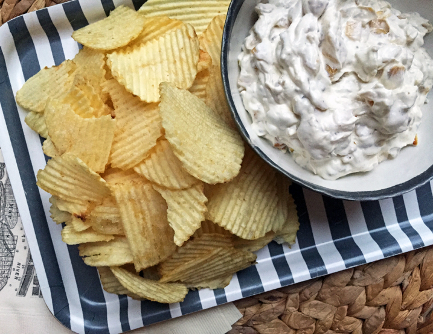

Onion Dip from Scratch
According to American culinary legend, an unknown Los Angeles chef devised onion dip back in the 50s by mixing Lipton soup mix with sour cream. Maybe … maybe not. What we know is that the folks at Lipton’s picked up the ball and ran with it to the point that more of their dehydrated soup mix was going into the dip bowl than the soup bowl. I have nothing against using manufactured mixes, but look, after the zombie apocalypse strikes, and the megamart shelves are stripped bare … what do we do then? Those of us with this recipe in our go-bags will survive to dip another day. Food for thought people, food for thought.
Ingredients
Instructions
Place the oil, onions and 1/2 teaspoon salt in a 10-inch saute pan over medium heat. Cook, stirring occasionally, until the onions are golden brown, about 20 minutes. Remove from the heat and set aside to cool for 15 minutes. Place the remaining ingredients and the remaining 1/2 teaspoon salt in a medium mixing bowl, add the cooled onions and stir to combine. Refrigerate for at least 1 hour and stir again before serving.